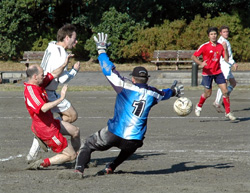
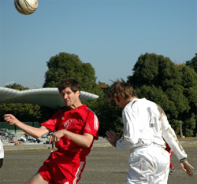
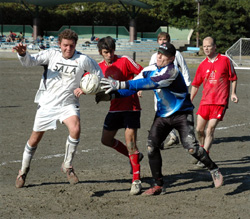
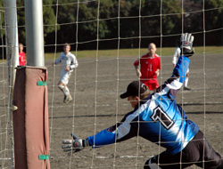

|
OIFuto, Sun 10th Dec. Not much to say really. Sala and The Swiss Kickers have now shared three games in a row, with only two goals scored and chances few and far between. Yesterday’s result came then, as little surprise.
What it did do is play nicely into the hands of Hibs (again) and the other teams in the chasing pack, YCAC and BFC.
The first half started dramatically enough with Brookey creaming a half volley from the edge of the box that was bound for the top corner, until the Swiss keeper got a paw to it and turned it spectacularly over.
Kirk was -as ever- a downright menace at anything even resembling a set piece, and had to be shackled in such a manner as to push the boundaries of the rule book. Sala’s defence was fairly resolute though and relied upon Guido’s determination in the air, Brian’s abrasiveness and Yusuke and Dan’s ability to get up and down the wings.

A typical TML all-in stramash in the Swiss box was about the only other talking point of the first half, Toby’s header being saved by the keeper’s shoulder and the ball being cleared off the line three times in quick succession. The pitch, which was about as bad as I’ve ever seen it, meant that the ball spent most of the game in the air and there was little room for pedalas, Cruyff turns, or double drag backs in the final third, something which severely dented the wizardly Sala’s chances (Loud clearing of throat…)
The second half was something of a snore-fest. Strikers were seen admiring the design of aircraft on approach to a Haneda, and midfielders were heard to shout for stilts, ladders and spring heeled boots in a vain attempt to reach the small white orb that continually sailed over their heads. Perhaps that’s being a little harsh, but there’s nothing much else to say. Both sides defended capably and probably within their comfort zones. Andres and Brian were as destructive as ever and Shigeru and Giles linked well coming out of defence, but a final ball of quality was hard to deliver from the gloop of Oi-Mud.
The last few minutes saw a blip on the action radar, as both teams realized that one point was about as much use to them as a New Orleans levee in a hurricane.
Swiss had a go first, a midfielder thundering a dipping shot from distance that Andy Cross did brilliantly to tip onto the bar, the rebound skipping heartstoppingly past three red shirts. Then Sala turned the screw at the other end.
Scotty’s universe-affirming cross from the left found Dhugal at the near post and his delicate flick was touched onto the ‘pipe’ by the keeper and rolled agonizingly along the line. Then almost immediately from Brookey’s corner, Guido’s thumping header whacked the bar and rebounded to safety, as Sala’s subs stood hands-on-hips in disbelief. Unlike the previous game against Celts however, it wasn’t to be.
Good game played in good spirit by both teams, but a result that benefits neither. We’re expecting some thank you’s from certain other teams in our Christmas mailbag!
Clarkey’s shocking post match announcement of his forthcoming engagement to Naomi, was met by disbelief all round and will need to be verified by legal papers before being accepted by the rest of the team.
He chose to celebrate by turning in a horrible first half performance for short handed AFC and was highly culpable for the only goal of the half.
Congratulations big yin, you are now a union…
Report by Roddy Charles
|